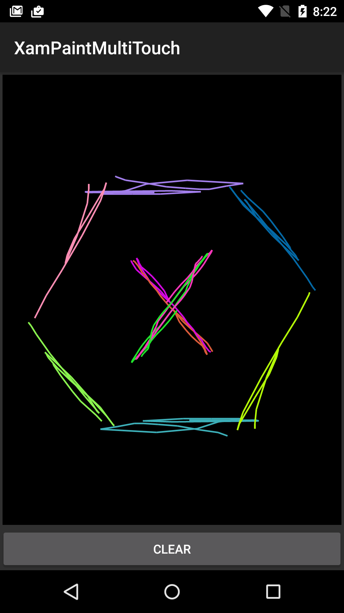

Duration
15 minutes
Goals
In this lab, you will code a multi-touch drawing application that will let you draw several lines at the same time. Each line will use a randomly-generated color. The screenshot below shows the finished app with a simple user-created drawing.
Required assets
The Resources folder for this part contains a Start solution you will use as starter code and a Completed solution you can use to check your work.
Challenge
Use the high-level guidelines here to complete the exercise. Detailed instructions are provided below if you would like more information.
The starter project contains a single Activity that displays a custom View.
You'll add code to the custom View to track and visualize simultaneous touch events.
- Open the XamPaint solution in the Start folder from the Resources for this part.
- Override the
OnTouchEventmethod. All your code will be added in this method. - Create a
switchstatement based onActionMasked. - Add cases to the
switchfor each of the 5 Actions you need to handle. - At the end of each case, you will need to return
trueto indicate you have handled the event. - Add a
defaultcase that returnsfalse. - When a finger touches the screen: create a new
Path, move the path to the initial X/Y point, and add the path to dictionary of current lines and the list of all lines. Use the pointer ID as the dictionary key. You will also need to create a newPaintobject using the supplied helper method and add it to theListofPaints. - When you receive a
Moveaction, update all current lines so they include their new X/Y point. - When a finger leaves the screen, remove the associated
Pathfrom the dictionary. - Run the app to test your work.
Steps
You can either use the above guidelines or follow the step-by-step instructions shown here.
Open the XamPaintMultiTouch start solution
- Open the Start solution in the Resources folder for this part.
- Open PaintView.cs, all your work will be done in this file.
-
Locate the
Dictionaryfield. It will store the lines that are currently "in process" (i.e. the ones the user is currently drawing). You will add a path to this dictionary when the user starts drawing a new line and remove it when they lift that finger off the screen. Notice that the dictionary maps frominttoPath. You will use the pointer ID as the dictionary key and the path as the value. This will let you easily lookup a path using the pointer ID. -
Locate the
Listfield that storesPathobjects. This will hold all the lines the user has drawn during the current session. You will add a path to it whenever a new finger contacts the screen. You will not need to remove lines from the list - they only need to be removed when the user clicks the Clear button and that code has been provided for you. Feel free to examine the implementation of theClearmethod to see this. -
Locate the
Listfield that storesPaintobjects. This will hold the paint colors used for each line. You will use the suppliedGenerateRandomColorPaintmethod to create a newPaintwhenever a new finger contacts the screen. You will then add thePaintto this list. You will not need to removePaints from the list - they only need to be removed when the user clicks the Clear button and that code has been provided for you. Feel free to examine the implementation of theClearmethod to see this. -
Locate the
OnDrawmethod. Notice that it redraws all lines when anything changes. This technique was selected intentionally even though is not the most efficient solution. It is simple to code and keeps us focused on the touch events rather than adding extra code to optimize the drawing performance.
Override OnTouchEvent
-
Override the
OnTouchEventmethod in thePaintViewclass. All your work will done inside this method. -
Add a
switchstatement based on theActionMaskedproperty of theMotionEventparameter. -
Add
cases for theMotionEventActionsvaluesDown,PointerDown,Move,PointerUpandUp. -
At the end of each case, you will need to return
trueto indicate you have handled the event. -
Add a
defaultcase that returnsfalse.
Create a new Path and Paint when a finger touches the screen
When a finger touches the screen, you will create a new Path object for the finger,
add the starting point, and store it in both the dictionary and the list.
You will also need to create and store a Paint object for this line.
These operations apply to both the Down and PointerDown cases.
-
Begin in the
MotionEventActions.Downcase. In this case, you know there is just one finger on the screen and information about it is at index 0. -
Get the current pointer ID using the
GetPointerIdmethod on theMotionEvent, passing in0. -
Get the X and Y coordinates of the finger using the
GetXandGetYmethods, passing in0. -
Create a new
Pathobject. -
Call
MoveToon the path and pass it the X/Y coordinates. -
Add the path to the
Dictionaryusing the pointer ID as the key. -
Add the path to the
ListofPathobjects. -
Use the
GenerateRandomColorPaintmethod to create aPaintobject. -
Add the
Paintto theListofPaintobjects. -
Repeat the above steps for the
MotionEventActions.PointerDowncase. This case is used when a new finger contacts the screen while there are other fingers present. The only difference between the this case and the last one is that here you must useActionIndexin your calls toGetPointerId,GetX, andGetY. The code for the two cases is nearly identical. If you have time, feel free to refactor the code to remove the repeated parts. Note that the solution code does not do the refactoring in order to keep it simple.
Update lines when pointers move
When a Move action occurs, you need to update all the current Paths with the new X/Y points.
Remember that a Move action reports the updated position of all fingers currently touching the screen.
-
Iterate through every active pointer using a
forloop and thePointerCountproperty on theMotionEvent. -
Retrieve the pointer ID for the current finger using the
GetPointerIdmethod. Use the loop variable from yourforloop as the parameter. -
Retrieve the X and Y coordinates for the current finger using the
GetXandGetYmethods. Use the loop variable from yourforloop as the parameter. -
Retrieve a
Pathfrom theDictionaryusing the pointer ID as the key. -
Call
LineToon thePathand pass it the X/Y coordinates. -
Outside the loop, call
Invalidateto force a redraw of the view.
Respond to the Up actions
When a finger leaves the screen, you need to remove its associated Path from the Dictionary.
You will be working in the MotionEventActions.Up and MotionEventActions.PointerUp cases.
The only difference between the two cases is the parameter you use to get the pointer ID:
for MotionEventActions.Up you use 0 and for MotionEventActions.PointerUp
you use the ActionIndex.
-
Find the pointer ID using the
MotionEvent'sGetPointerIdmethod, passing in0or theActionIndexas appropriate. -
Use the ID to remove the
Pathfrom theDictionary; remember the ID is the dictionary key. - Run the app to test your work.
Optimize drawing (Optional)
OnDraw callback.
This requires some knowledge of the Canvas and Bitmap classes as well as many
changes to the current code. The guidance provided here is not complete in every detail; however, a
full solution is available in the Completed_OptimizedDrawing folder.
Due to time constraints, this part is intended to be an after-class exercise.
The current implementation redraws all the lines whenever any of them change. As a performance optimization,
you could draw the lines into a bitmap as the user creates them and then copy the entire bitmap to the screen
in OnDraw.
-
Begin with the solution to the previous part. All your work here will be done in the
PaintViewclass. -
Remove the
DictionaryandListfields that stored thePathobjects and all code that used thePaths throughout thePaintViewclass. The new drawing technique will not usePath. -
Add a
Dictionary<int, Paint>field namedpaints. Initialize it to a new instance on the line where you declare it. -
A
Bitmapis a grid of pixels. It has a width and a height. Each pixel can be addressed using an X/Y coordinate pair of integers. Each pixel has a color specified using an integer.Bitmapprovides methods to get/set the values of individual pixels. There are also a few methods to work with a group of pixels simultaneously. Add aBitmapfield nameddrawingSurfaceto thePaintViewclass. -
A
Canvasis a collection of drawing methods.Canvasdoes not have an intrinsic destination for the drawing; you need to supply aBitmapwhen you create theCanvas. For example,Canvashas aDrawLinemethod that will calculate which pixels in the underlyingBitmapshould be modified and set those pixels for you. Add aCanvasfield nameddrawingCanvasto thePaintViewclass. -
A
MotionEvent.PointerCoordsobject is a container for an X/Y coordinate pair. It gives you a convenient way to store the X/Y location of a touch event. This implementation will use aDictionaryofPointerCoordsobjects to remember the last X/Y coordinate pair for each finger currently on the screen. If we know the previous X/Y coordinates and the current X/Y coordinates, we will be able to draw a line between the two points. Add aDictionary<int, MotionEvent.PointerCoords>field namedcoordsto thePaintViewclass. Initialize it to a new instance on the same line where you declare it. -
To create a
Bitmap, you use one of the staticBitmap.Createmethods. To create aCanvas, you usenewand pass aBitmapto the constructor. Add the following method to yourPaintViewclass. TheBitmapit creates will match the screen dimensions. The code is inside theOnSizeChangedmethod so it re-runs when the device is rotated. Note that our implementation will not preserve the user's drawing across orientation changes. -
Modify the
DownandPointerDowncases in yourOnTouchEventmethod. The strategy is to locate the X/Y coordinate of the new touch point and add it to thecoordsDictionary. The key will be the pointer ID. You should also create a newPaintobject and add it to thepaintsdictionary. The code forDownis shown below. The code forPointerDownanalogous so it is not shown here. -
Modify the
Movecase in yourOnTouchEventmethod. The goal is to retrieve the new X/Y coordinates for each finger, grab the previous X/Y coordinates from thecoordsDictionaryand use theCanvas'sDrawLinemethod to draw a line between those two points. Then update the X/Y coordinates in thecoordsDictionaryto the new values. The core of the code is shown below (this code will be the body of the loop). -
Modify the
PointerUpandUpcases in yourOnTouchEventmethod. Remove thePaintobject from itsDictionary. Remove thePointerCoordsobject from itsDictionary. -
Replace your implementation of the
OnDrawmethod with the one given below. This copies yourBitmapinto theCanvassupplied by Android. This should be more efficient than redrawing all the lines as we did in the previous implementation. -
Replace your implementation of the
Clearmethod with the one given below. This overwrites all the pixels in theBitmapand then forces a redraw of the screen. - Run the app to test your work. It should behave identically to the previous implementation from the user's perspective.
protected override void OnSizeChanged(int w, int h, int oldw, int oldh)
{
base.OnSizeChanged(w, h, oldw, oldh);
drawingSurface = Bitmap.CreateBitmap(w, h, Bitmap.Config.Argb8888); // full-screen bitmap
drawingCanvas = new Canvas(drawingSurface); // the canvas will draw into the bitmap
paints.Clear();
coords.Clear();
}
case MotionEventActions.Down:
{
int id = e.GetPointerId(0);
paints.Add(id, GenerateRandomColorPaint());
var start = new MotionEvent.PointerCoords();
e.GetPointerCoords(id, start);
coords.Add(id, start);
return true;
}
var id = e.GetPointerId(index); float x = e.GetX(index); float y = e.GetY(index); drawingCanvas.DrawLine(coords[id].X, coords[id].Y, x, y, paints[id]); coords[id].X = x; coords[id].Y = y;
protected override void OnDraw(Canvas canvas)
{
canvas.DrawBitmap(drawingSurface, 0, 0, null);
}
public void Clear()
{
drawingCanvas.DrawColor(Color.Black, PorterDuff.Mode.Clear);
Invalidate();
}
Summary
During this lab, you applied what we have learned about multi-touch in Android to track and visualize touch interactions within a custom view.